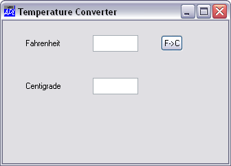
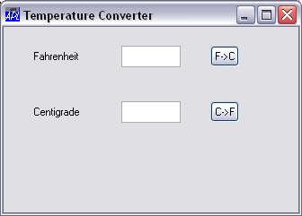

Our Temperature Converter must work both ways; from Fahrenheit to Centigrade and vice versa. There are a number of different ways of making this happen.
A simple approach is to have two buttons for the user to press; one for Fahrenheit to Centigrade, and one for Centigrade to Fahrenheit. We will call the first one F2C and place it alongside the Fahrenheit edit field. The caption on this button will be 'F->C'. When the user presses the button, we want our application to calculate the centigrade temperature. For this we need a callback function. Let's call it f2c. Notice how you associate a callback function with a particular event. In this case, the Select event. This event is generated by a Button when it is pressed.
(The statement below is broken into two only so as to fit on the page)
FB←'Button' 'F->C' (10 70)('Event' 'Select' 'f2c')
'TEMP.F2C'⎕WC FB
Notice that it is not necessary to specify the Size of the button; the default size fits the Caption nicely. Now let's add the Centigrade to Fahrenheit button. This will be called C2F and have an associated callback function c2f. We could have chosen to have a single callback function associated with both buttons, which would save a few lines of code. Having separate functions is perhaps clearer.
Again, the statement is split into two only to make it fit onto the page.
FC←'Button' 'C->F' (40 70)('Event' 'Select' 'c2f')
'TEMP.C2F'⎕WC FC